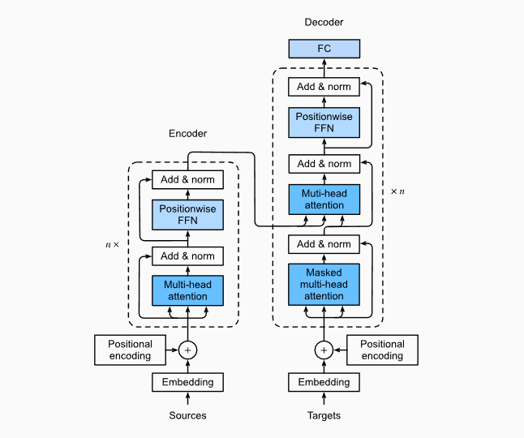

从 RNN 到 BERT，GPT
爬一下语言模型的科技树。这些模型和直来直去的 MLP，CNN 相比，理解难度确实大了不少。遂开一篇文章加深一下理解。计划是用尽量简洁的语言，梳理从 RNN 开始到 BERT，GPT 结束的几个著名 NLP 模型的学习路线。
RNN
目的：处理时序数据。自然语言是一种典型的时序数据。
结构：在最简单的 输入层-隐藏层-输出层 的两层 MLP 基础之上加入时序性。具体来说是第 \(k-1\) 个时间步的隐藏层到第 \(k\) 个时间步的隐藏层的自回归 (autoregression)。在 RNN 中，自回归的隐藏层被称为隐状态 (hidden state)，它使得网络具有了记忆的能力。 \[ \begin{aligned} h_t&=f(x_t,h_{t-1},\mathbf{W}_x. \mathbf{W}_h)=\phi(x_t\mathbf{W}_{x}+h_{t-1}\mathbf{W}_h+b_h) \\ o_t&=g(h_t, \mathbf{W}_o)=h_t\mathbf{W}_o+b_o \end{aligned} \] 前向传播：若批量大小为 1，将时间步为 \(T\) (长度为 \(T\)) 的输入 \(x_1,...,x_T\)，按照时序喂到 RNN 中，产生 \(T\) 个三元组 \((x_t,h_t,o_t)\)。
随时间反向传播 (Backpropagation Through Time, BPTT)：比较 \(o_t\) 与 ground truth 标签 \(y_t\) 计算损失 \(L\)，接下来计算 \(\mathbf{W}_x,\mathbf{W}_h,\mathbf{W}_o\) 的梯度。过程见 Analysis of Gradients in RNNs，可以看到，当时间步 \(T\) 过大时，梯度的连乘可能导致梯度爆炸或梯度消失。
梯度更新：以批量为单位前向传播，反向传播，并计算梯度。注意 RNN
的循环性，每一次迭代都将使得计算图的深度加一。因此在每次批量开始前，对隐状态进行
detach_() 防止计算图的深度超过时间步 \(T\)。
预测：将第 \(k-1\) 步的预测输出作为第 \(k\) 步的输入做预测直到指定长度的序列成功生成。
GRU and LSTM
RNN 的变种，引入了记忆单元 (memory cell) 与门控机制 (gating mechanism)，解决了传统 RNN 的梯度消失问题 (梯度爆炸可用梯度剪裁 gradient clipping 解决)，并且使得网络具有选择性的更新或遗忘记忆中内容的能力。
结构见 Gated Recurrent Unit 与 Long Short-Term Memory。
Seq2Seq Learning
Seq2Seq 问题要求我们解决输入序列与输出序列长度可变的问题。最经典的例子是机器翻译。
解决这类问题的架构是编码器-解码器架构 (encoder-decoder architecture)。
- 编码器 (RNN 或双向 RNN) 将长度可变的序列作为输入，并将其信息编码到隐状态中。
- 解码器 (RNN) 将编码器生成的表征 (representation) 与已经看见/生成的词元作为输入预测下一个词元。
结构：解码器比编码器多一个全连接输出层用于预测。
前向传播：
- 编码器：若批量大小为 1，将时间步为 \(T\) 的输入 \(x_1,...,x_T\) 喂到编码器中，获得 \(T\) 个隐状态 \(h_1,...,h_T\)。编码器通过选定的函数 \(q\) 计算上下文变量 (context variable) \(c=q(h_1,...,h_T)\)。在最基础的 seq2seq 模型中，\(c=h_T\)。
- 解码器：对于输入 \(x_1,...,x_T\)，我们有真值 (ground truth) 序列 \(y_1,...,y_{T'}\)。在时间步 \(t'\)，解码器将 \(y_{t'-1}\) (已经看见的) 或 \(o_{t'-1}\) (已经生成的) 与编码器生成的上下文变量 \(c\) 拼接起来作为输入。通过全连接输出层和 Softmax 选择器，编码器作出当前的预测 \(o_{t'}\)。
解码器使用真值序列 \(y_1,...,y_{T'}\) 而不使用自己的预测进行训练，这一技巧被称为强制教学 (teacher forcing)。
反向传播与梯度更新：差不多，同时更新编码器与解码器的参数。此外，注意使用
sequence_mask() 零值化有效长度以外的不相关项 (如填充词元
padding)。
预测：将源语言喂到编码器里生成上下文变量后，在初始时间步把序列开始词元
<bos>
喂到解码器中一步一步生成目标语言的翻译序列。预测时，每个当前时间步的输入来自于前一个时间步的预测。当预测出序列结束词元
<eos> 时，预测结束。可以使用束搜索 (beam search)
增加预测准确性。
Attention Mechanism
动机：Seq2Seq 架构的问题是，输入序列越长，作为输入表征编码的上下文变量就越容易失去其影响力。为了解决这个问题，注意力机制为解码器中的每个时间步都设计一个上下文变量 \(c_{t'}\)，从而提高预测准确性。
模型：若干值 (values) \(v_1,...,v_T\) 有若干键值 (keys) \(k_1,...,k_T\)。偏好为 \(k_q\)。带着这个偏好，我们查询 (query) 前述的 key-value 对，并将我们的注意力 (attention) 按照偏好进行分配。符合我们偏好的线索会得到更大的注意力权重，反之亦然。注意力权重的计算方法被函数 \(\alpha(k_i,k_q)\) 表示，其和一般为 \(1\)。加权求和后生成对该线索序列的印象 \(f(x)\)。 \[ \begin{aligned} \text{\{keys,values\}}&: \{(k_1,v_1), (k_2,v_2),...,(k_T,v_T)\} \\ \text{query}&: k_q \\ \text{context}&: f(k_q)=\sum_i \alpha(k_q,k_i)v_i=\sum_i \text{softmax}(a(k_q,k_i))v_i \end{aligned} \] 在 Seq2Seq 架构应用注意力机制：
- 编码器产生的隐状态 \(h_1,...,h_T\) 既是 keys 又是 values。
- 解码器在时间步 \(t'\) 将上一步的预测 \(o_{t'-1}\) 或真值 \(y_{t'-1}\) 或隐状态作为 query，计算出编码器隐状态 \(h_1,...,h_T\) 对应的注意力分数 \(a_1,...,a_T\)。对注意力分数应用 softmax 后得到注意力权重 \(\alpha_1,...,\alpha_T\)。加权求和后得到的 \(f(k_q)\) 与上一步的预测 \(o_{t'-1}\) 或真值 \(y_{t'-1}\) 一起喂到解码器中生成当前步的预测输出。
注意力分数：平均分数 (无注意力)，Nadaraya-Watson 高斯核回归分数 (可加入可学习的参数)，加型注意力 (additive attention，加入参数后合并进入一个单输出单隐藏层的 MLP)，点积注意力 (scaled dot-product attention，需要将 query 与 key 设置成相同长度)
Self-Attention and Positional Encoding
自注意力机制可以说是注意力机制的一个子集。它与传统的注意力机制的区别在于，对于给定序列 \(x_1,...,x_t\)，\(x_i\) 同时是 key, value 与 query。序列对自己抽取特征获得 \(y_1,...,y_n\)，其中 \(y_i=f(x_i,\{x_1,x_1\},...,\{x_n,x_n\})\)。
具体来说，在无参情况下，对于 \(X\in \mathrm{R}^{n\times d}\)，其自注意力的计算方式是： \[ Y=f(X)=\text{softmax}(XX^T)X \]
- \(XX^T\) 得到 \(n\times n\) 的方阵，\((i,j)\) 处的元素表示第 \(x_i\) 与 \(x_j\) 的相关性
- 逐行应用 softmax，把相关性转化为和为 1 的权重
- 再与 \(X\) 相乘，得到了每个行向量 \(x_i\) 经过注意力机制加权求和后的表示
为以上的三个 \(X\) 添加对应的可学习的参数 \(W_q,W_k,W_v\)，就是自注意力的经典形式了： \[ Q=W_qX,K=W_kX,V=W_vX \\ \text{attention}(Q,K,V)=\text{softmax}(\frac{QK^T}{\sqrt{d_k}})V \] 自注意力对输入矩阵进行自乘，丢失了序列的顺序信息。选取合适的位置编码 (positional encoding) 在输入中加入位置信息，使得其能够记忆位置信息。
Transformer
结构：纯注意力编码器-解码器架构，编码器/解码器各自有 \(n\) 个 transformer 块。每块中使用多头 (自) 注意力，层归一化，基于位置的前馈网络 (position-wise feed forward network)。

- 多头注意力 (multi-head attention)：使用多个独立的注意力池化，合并各个头的输出得到最终输出。目的是希望抽取不同的信息。(联想 CNN 中的多卷积核对应的多通道)
- 带掩码的多头注意力 (masked multi-head attention)：解码器注意力池化层在计算 \(x_i\) 输出时，假装当前序列长度为 \(x\)，不考虑该元素之后的元素。这是因为训练时目标序列一整个作为输入，而预测时是将元素逐个作为输入的。因此在训练时使用掩码，让解码器不能“作弊”看到未来的元素。
- 层归一化 (layer normalization)：批量归一化 (batch normalization) 按特征维做归一化，层归一化按样本做归一化。一个浅显理解是批量归一化不适合序列长度可变的 NLP 应用。
预测时解码器的自注意力池化层：预测第 \(t+1\) 个输出时，输入前 \(t\) 个预测值作为 key 和 value，第 \(t\) 个预测值还作为 query。典型的自回归 (autoregression) 机制。
Self-Supervised Learning
In SSL, the system learns to predict part of its input from other parts of it. In other words a portion of the input is used as a supervisory signal to a predictor fed with the remaining portion of the input.
来自 Yann LeCun 的定义。
自监督学习属于一种无监督学习。对于无标签的数据 \(x\)，将其分为 \(x'\) 与 \(x''\) 两部分。把 \(x'\) 输入模型生成预测 \(y\)，训练该模型使得 \(y\) 与 \(x''\) 的差异尽量小。
自监督学习前置任务 (pretext task)：
- 遮盖词预测 (masked token prediction, MTP)：\(x'\) 是应用了随机遮盖后的文本，\(x''\)
是被遮盖的文本。遮盖的形式可以是使用特殊的掩码
<MASK>或随机的选取其他字符进行替换。 - 下句预测 (next sentence prediction,
NSP)：从原始文本中生成大量二元组，每个二元组中有两个句子 \((w_1,w_2)\)。向模型中输入
<CLS>+ \(w_1\) +<SEP>+ \(w_2\)，预测 \(w_2\) 是否是 \(w_1\) 的下一句。 - 句间顺序预测 (sentence order prediction, SOP)：从原始文本中生成大量句组。预测句组正确的排列顺序。
BERT
BERT 是 Bidirectional Encoder Representation from Transformer.
结构：Transformer 的编码器后面连一个输出层。输出层的构造由下游任务 (downstream task) 决定。
原理：下游任务的带标签数据通常很少。BERT 利用大量的无标签数据以自监督学习的方式进行预训练 (pre-train) [Transformer 编码器]，再使用下游任务较少的带标签数据进行微调 (fine tune) [Transformer 编码器与输出层]。
下游任务的输出层设计，一般是若干个线性层。具体见 李宏毅 - 自督導式學習 (二)：
- 情感分析 (Sentiment analysis)：序列输入，类别输出。输出层作用在
<CLS>上。 - 词性分析 (POS tagging)：序列输入，等长序列输出。输出层作用在每个元素上。
- 自然语言推理 (Natural language
inferencee)：输入两个序列，输出一个类别。输出层作用在
<CLS>上。 - 基于文本提取的问答 (Extraction-based Question Answering)：输入两个序列 (文本序列，提问序列)，输出两个整数 \(s,e\)，标记正确答案在文本中的位置。两种输出层，作用在文本元素上做内积。
为何预训练+微调的 idea work？前置任务与下游任务明明完全不同呀？
- BERT 中的 Transformer 编码器承担了上下文词嵌入 (Contextualized word embedding) 的功能。是一个数据量更大，结构更复杂的 CBOW 词嵌入。对于依赖上下文解答的下游任务，仅需要少量数据进行微调。
- 词嵌入 (Word embedding)：将词表示为向量，意义相近的词具有相似的向量表示。上下文词嵌入在生成词向量时考虑上下文的影响。
- 质疑与反驳：蛋白质，DNA，音乐分类；多语言 BERT 的跨语言对齐 (Cross-ligual Alignment)：多语言遮盖填空预训练，英文 QA 微调，中文 QA 测试，F1 分数可达 78.8。
GPT
GPT 是 Generative Pre-trained Transformers。
结构：基本上是 Transformer 的解码器。由于不是 Seq2Seq 架构，去掉每个 Transformer 块中的交叉注意力 (Cross attention) 层。
训练：预测下一个词元 (Predict next token task)。该任务符合 Transformer 解码器的特点 (单向性与生成能力)。使用庞大的语料库进行预训练。对于特定的下游任务，把任务提供的带标签数据转化为生成式任务，再进行微调。
上下文学习 (In-context learning)：无需微调 (即无需进行梯度下降)。将查询的问题与若干上下文演示样例连接在一起，形成带有提示的输入。(给出样例的个数：Zero-shot learning, One-shot learning, Few-shot learning)
Reference
一些超级好的资料。
- 自注意力機制 (Self-attention) - 李宏毅
- Attention Mechanism - medium
- 超详细图解 self-attention - 知乎
- Dive Into Deep Learning